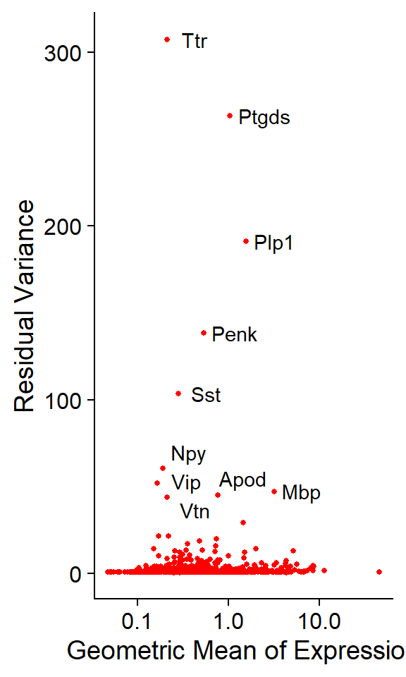

Last updated: 2025-09-03
Checks: 7 0
Knit directory: CosMx_pipeline_LGA/
This reproducible R Markdown analysis was created with workflowr (version 1.7.1). The Checks tab describes the reproducibility checks that were applied when the results were created. The Past versions tab lists the development history.
Great! Since the R Markdown file has been committed to the Git repository, you know the exact version of the code that produced these results.
Great job! The global environment was empty. Objects defined in the global environment can affect the analysis in your R Markdown file in unknown ways. For reproduciblity it’s best to always run the code in an empty environment.
The command set.seed(20250517) was run prior to running
the code in the R Markdown file. Setting a seed ensures that any results
that rely on randomness, e.g. subsampling or permutations, are
reproducible.
Great job! Recording the operating system, R version, and package versions is critical for reproducibility.
Nice! There were no cached chunks for this analysis, so you can be confident that you successfully produced the results during this run.
Great job! Using relative paths to the files within your workflowr project makes it easier to run your code on other machines.
Great! You are using Git for version control. Tracking code development and connecting the code version to the results is critical for reproducibility.
The results in this page were generated with repository version cc8470c. See the Past versions tab to see a history of the changes made to the R Markdown and HTML files.
Note that you need to be careful to ensure that all relevant files for
the analysis have been committed to Git prior to generating the results
(you can use wflow_publish or
wflow_git_commit). workflowr only checks the R Markdown
file, but you know if there are other scripts or data files that it
depends on. Below is the status of the Git repository when the results
were generated:
Ignored files:
Ignored: .Rhistory
Ignored: .Rproj.user/
Ignored: NBClust-Plots/
Ignored: analysis/.Rhistory
Ignored: data/flatFiles/CoronalHemisphere/Run1000_S1_Half_exprMat_file.csv
Ignored: data/flatFiles/CoronalHemisphere/Run1000_S1_Half_fov_positions_file.csv
Ignored: data/flatFiles/CoronalHemisphere/Run1000_S1_Half_metadata_file.csv
Ignored: output/processed_data/Log/
Ignored: output/processed_data/RC/
Ignored: output/processed_data/SCT/
Ignored: output/processed_data/exprMat_unfiltered.RDS
Ignored: output/processed_data/fov_positions_unfiltered.RDS
Ignored: output/processed_data/metadata_unfiltered.RDS
Ignored: output/processed_data/negMat_unfiltered.RDS
Ignored: output/processed_data/seu_filtered.RDS
Ignored: output/processed_data/seu_semifiltered.RDS
Unstaged changes:
Modified: CosMx_pipeline_LGA.Rproj
Modified: output/performance_reports/0.0_data_loading_PR.csv
Modified: output/performance_reports/1.0_qc_and_filtering_PR.csv
Deleted: output/performance_reports/2.0_normalization_PR.csv
Deleted: output/performance_reports/3.0_dimensional_reduction_PR.csv
Deleted: output/performance_reports/4.0_insitutype_cell_typing_PR.csv
Deleted: output/performance_reports/4.1_insitutype_unsup_clustering_PR.csv
Deleted: output/performance_reports/4.2_seurat_unsup_clustering_PR.csv
Deleted: output/performance_reports/5.0_RC_normalization_PR.csv
Deleted: output/performance_reports/5.1_RC_dimensional_reduction_PR.csv
Deleted: output/performance_reports/6.0_Log_normalization_PR.csv
Deleted: output/performance_reports/6.1_Log_dimensional_reduction_PR.csv
Deleted: output/performance_reports/pipeline_PR.csv
Note that any generated files, e.g. HTML, png, CSS, etc., are not included in this status report because it is ok for generated content to have uncommitted changes.
These are the previous versions of the repository in which changes were
made to the R Markdown (analysis/2.0_normalization.Rmd) and
HTML (docs/2.0_normalization.html) files. If you’ve
configured a remote Git repository (see ?wflow_git_remote),
click on the hyperlinks in the table below to view the files as they
were in that past version.
| File | Version | Author | Date | Message |
|---|---|---|---|---|
| html | 43970ac | lga-uoc | 2025-09-02 | Build site. |
| Rmd | 78c8449 | lga-uoc | 2025-09-02 | Add Rmds files in analysis |
library(data.table) # Efficient data management
library(here) # Enhanced file referencing in project-oriented workflows
library(dplyr) # For the use of pipes %>%
library(kableExtra) # For table formatting
library(Seurat) # Seurat object
library(ggplot2) # Graphics
library(patchwork) # Layout graphicsFirst of all, data needs to be loaded into the session. For this script, only the filtered Seurat object is needed.
According to Nanostring recommendations (see CosMx Scratch Space blog), CosMx SMI data should be normalize using total counts. Further transformations, such as log1p, square root or “Pearson residuals”, are only recommended for UMAP or distance-based clustering methods. Instead, they suggest using linear-scale data for the rest of the analysis.
In the CosMx Scratch Space vignette, for example, normalization is made by total counts. Afterwards, square root transformation is implemented to create a UMAP plot. Finally, downstream analysis are performed: raw counts are used for cell typing (with UMAP visualization) and normalize (non-transformed) counts are used for neighborhood expression analysis.
However, the CosMxLite vignette proposes using “SCTransform”, reporting a better clustering performance when using this method in comparison to the classic log-normalization. This method creates a different assay for the normalize/transformed data, leaving the original assay intact in case its needed. Additionally, “SCTransform” also calculates highly variable genes and scales data, which the other two methods do not include and has to be done afterwards.
For simplicity, this pipeline will execute normalization according to CosMxLite, using the “SCTransform” method, however, the code is parameterized so that the user can select which option to follow, between Total counts (“RC”), Total counts + Log1p transformation (“LogNormalize”) or SCTransform (“SCT”).
# Select normalization method between "RC", "LogNormalize" or "SCT"
norm_method <- "SCT"
# Apply normalization
seu <- normalize_CosMx(seu, method = norm_method)
## normalize_CosMx() is a self created function that performs either RC,
## LogNormalize or SCT in a Seurat object of CosMx data using Seurat built-in
## functions. Available code is in "code/aux_functions.R"# Calculate top10 genes
top10 <- head(VariableFeatures(seu), 10)
# Plot variable genes
p1 <- VariableFeaturePlot(seu)
p2 <- LabelPoints(plot = p1, points = top10, repel = TRUE) + NoLegend()
p2
| Version | Author | Date |
|---|---|---|
| 43970ac | lga-uoc | 2025-09-02 |
Note that, by default, the functions “FindVariableFeatures” or “SCTransform” return the 2000 and 3000 most variable genes, respectively. However, in this case, as the panel covers only 1K genes, all the genes are reported as variable genes, but ranked from most to less variable.
This parameter could be changed to a lower number, if desired, but for such a small panel, all genes will be used for the dimensional reduction.
# Chop name for LogNormalize
if (norm_method == "LogNormalize") {
norm_method <- "Log"
}
# Create specific folder
dir.create(here("output","processed_data",norm_method))
# Save the Seurat object
seu_name <- paste0("seu_",norm_method,".RDS")
saveRDS(seu, here("output","processed_data",norm_method,seu_name))| Chunk | Time_sec | Memory_Mb |
|---|---|---|
| Libraries | 1.45 | 148.6 |
| LoadData | 1.46 | 425.0 |
| Norm | 25.78 | 771.6 |
| VizVar | 0.35 | 11.4 |
| SavingSeuObjs | 33.16 | 0.0 |
| Total | 62.20 | 1356.6 |
R version 4.4.3 (2025-02-28 ucrt)
Platform: x86_64-w64-mingw32/x64
Running under: Windows 10 x64 (build 19045)
Matrix products: default
locale:
[1] LC_COLLATE=Spanish_Spain.utf8 LC_CTYPE=Spanish_Spain.utf8
[3] LC_MONETARY=Spanish_Spain.utf8 LC_NUMERIC=C
[5] LC_TIME=Spanish_Spain.utf8
time zone: Europe/Madrid
tzcode source: internal
attached base packages:
[1] stats graphics grDevices utils datasets methods base
other attached packages:
[1] patchwork_1.3.0 ggplot2_3.5.1 SeuratObject_4.1.4 Seurat_4.4.0
[5] kableExtra_1.4.0 dplyr_1.1.4 here_1.0.1 data.table_1.17.0
[9] workflowr_1.7.1
loaded via a namespace (and not attached):
[1] deldir_2.0-4 pbapply_1.7-4 gridExtra_2.3
[4] rlang_1.1.4 magrittr_2.0.3 git2r_0.36.2
[7] RcppAnnoy_0.0.22 spatstat.geom_3.5-0 matrixStats_1.4.1
[10] ggridges_0.5.6 compiler_4.4.3 getPass_0.2-4
[13] reshape2_1.4.4 png_0.1-8 systemfonts_1.1.0
[16] callr_3.7.6 vctrs_0.6.5 stringr_1.5.1
[19] pkgconfig_2.0.3 fastmap_1.2.0 labeling_0.4.3
[22] promises_1.3.2 rmarkdown_2.29 ps_1.8.1
[25] purrr_1.0.2 xfun_0.49 cachem_1.1.0
[28] jsonlite_1.8.9 goftest_1.2-3 later_1.4.1
[31] spatstat.utils_3.1-5 irlba_2.3.5.1 parallel_4.4.3
[34] cluster_2.1.8 R6_2.5.1 ica_1.0-3
[37] spatstat.data_3.1-6 bslib_0.8.0 stringi_1.8.4
[40] RColorBrewer_1.1-3 reticulate_1.40.0 spatstat.univar_3.1-4
[43] parallelly_1.41.0 scattermore_1.2 lmtest_0.9-40
[46] jquerylib_0.1.4 Rcpp_1.0.13-1 knitr_1.49
[49] tensor_1.5.1 future.apply_1.11.3 zoo_1.8-14
[52] sctransform_0.4.2 httpuv_1.6.15 Matrix_1.7-2
[55] splines_4.4.3 igraph_2.1.2 tidyselect_1.2.1
[58] abind_1.4-8 rstudioapi_0.17.1 yaml_2.3.10
[61] spatstat.random_3.4-1 spatstat.explore_3.5-2 codetools_0.2-20
[64] miniUI_0.1.1.1 processx_3.8.4 listenv_0.9.1
[67] plyr_1.8.9 lattice_0.22-6 tibble_3.2.1
[70] withr_3.0.2 shiny_1.10.0 ROCR_1.0-11
[73] evaluate_1.0.1 Rtsne_0.17 future_1.34.0
[76] survival_3.8-3 polyclip_1.10-7 xml2_1.3.6
[79] fitdistrplus_1.2-4 pillar_1.10.0 whisker_0.4.1
[82] KernSmooth_2.23-26 plotly_4.11.0 generics_0.1.3
[85] rprojroot_2.0.4 sp_2.2-0 munsell_0.5.1
[88] scales_1.3.0 globals_0.16.3 xtable_1.8-4
[91] glue_1.8.0 lazyeval_0.2.2 tools_4.4.3
[94] RANN_2.6.2 fs_1.6.5 leiden_0.4.3.1
[97] cowplot_1.1.3 grid_4.4.3 tidyr_1.3.1
[100] colorspace_2.1-1 nlme_3.1-167 cli_3.6.3
[103] spatstat.sparse_3.1-0 viridisLite_0.4.2 svglite_2.1.3
[106] uwot_0.2.3 gtable_0.3.6 sass_0.4.9
[109] digest_0.6.37 progressr_0.15.1 ggrepel_0.9.6
[112] htmlwidgets_1.6.4 farver_2.1.2 htmltools_0.5.8.1
[115] lifecycle_1.0.4 httr_1.4.7 mime_0.12
[118] MASS_7.3-64